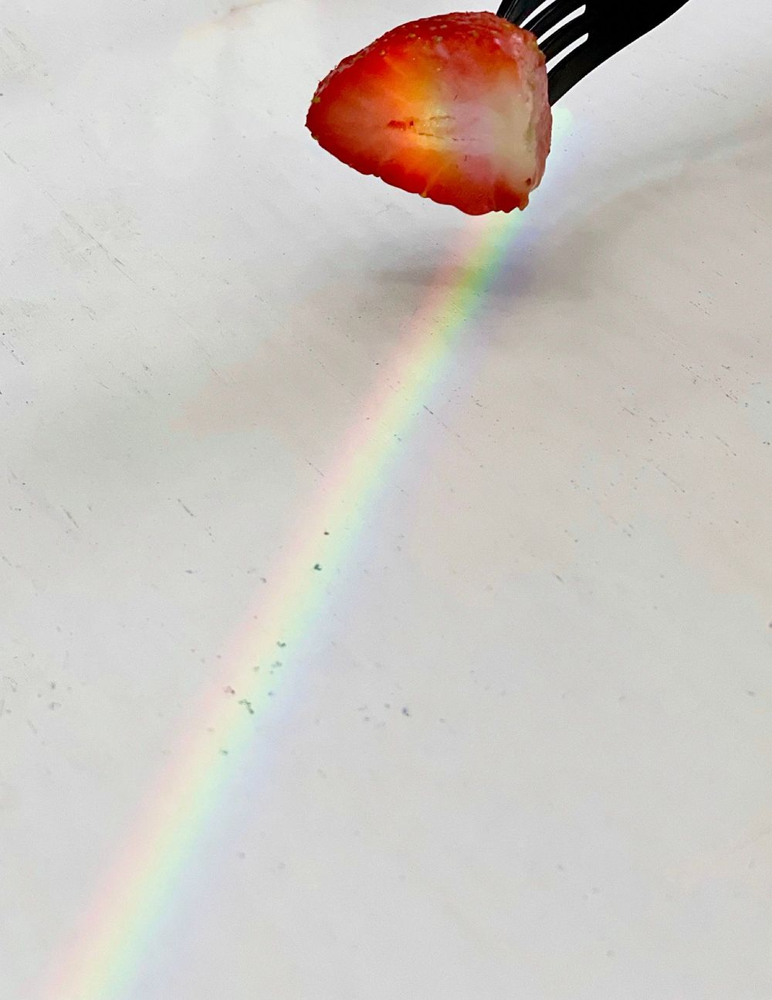

런모닝(아점) 난 소고기를 굽고
내가 고기 구울 동안 울 나코는 비빔면을 만들고
즐거운 식사를 함께 했다
나코가 비빔면을 사온 덕.분.에
나.코.덕.분.에 비빔면을 먹을 수 있었다🙄
*옆에서 계속 강조하길래 함 적어봄
웃겨 증말
후식으로 딸기까지 냠냠냠 하구나서
식탁에 무지개를 발견했다아아🌈
서로 찍고 난리가 났다ㅋㅋㅋㅋㅋㅋ 프메에 올리겠다구

시간이 좀 지나니까 무지개가 점점 이동을 하는데
나코 얼굴에 정착해서
찍었다
예술이다
나 좀 감각있는 것 같다💁🏻♀️
근데 나코가 먼저 무지개 프메를 보낸 것 같다🌈🤦🏻♀️